준비물
- 구글 계정 하나 — 숙소 예약 알림 메일을 받는 지메일 계정이면 가장 좋아요(예약 메일을 자동으로 읽어 캘린더에 넣어요)
- 구매 후 받은 설치용 시트 링크와 라이선스 키(TR-로 시작)
- 설치는 PC에서 10분 정도 걸려요. 다 되면 사장님·청소업체 모두 폰으로 써요
- 사진 속 빨간 테두리가 누를 곳이에요. 번호가 있으면 그 순서대로 눌러 주세요
1. 설치용 시트 사본 만들기
받은 링크를 열고 사본 만들기를 누르세요. 내 구글 드라이브에 내 시트가 생겨요(이 시트가 예약 장부예요).
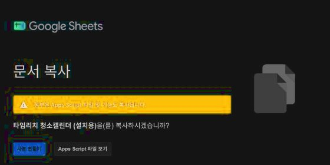
2. 메뉴 [타임리치] › [① 설치하기]
새로 생긴 시트 맨 위 메뉴에 타임리치가 생겨요. 눌러서 ① 설치하기를 누르세요.
메뉴가 안 보이면 10초쯤 기다리거나 페이지를 새로고침해 주세요.
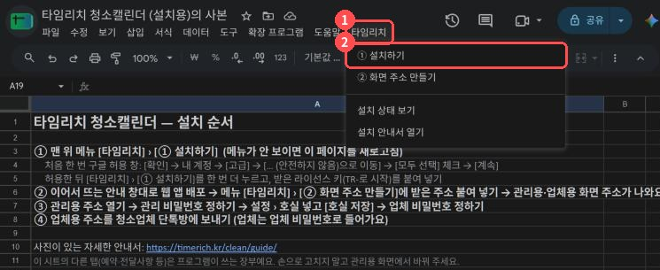
3. 구글 허용 (처음 한 번만)
① ‘승인 필요’ 창에서 확인 → 내 계정을 고르세요.
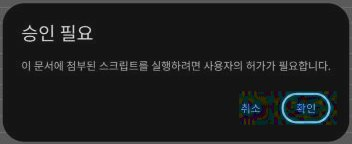
② ‘Google에서 확인하지 않은 앱’ 화면이 나오면 왼쪽 아래 고급 → 맨 아래 타임리치 청소캘린더(으)로 이동(안전하지 않음)을 누르세요.
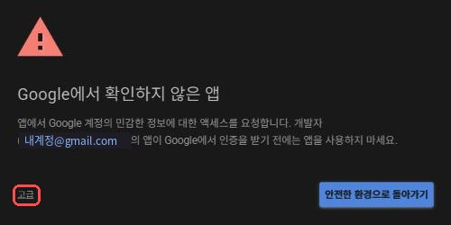
③ 권한 목록 화면에서 맨 위 모두 선택을 꼭 체크하고 계속. 체크가 하나라도 빠지면 허용 창이 다시 떠요.
이 경고는 ‘내 시트에 붙은 내 프로그램’이라 구글 심사를 거치지 않아서 나오는 표준 안내예요. 허용하는 권한은 이 시트 읽기·쓰기, 지메일 읽기 전용(예약 메일 읽기 — 설정에서 켤 때만), 타임리치 서버 연결(라이선스 확인), 10분 자동 실행이에요. 메일을 보내거나 지우는 권한은 없어요.
허용 뒤 ‘오류 발생 — 새로고침’ 창이 뜨면 새로고침하면 돼요.
4. 라이선스 키 넣기
허용이 끝나면 타임리치 › ① 설치하기를 한 번 더 누르고, 받은 키를 붙여 넣은 뒤 확인.
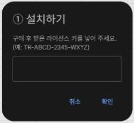
20초쯤 지나면 시트 아래에 장부 탭들(예약·전달사항 등)이 생기고, ‘마지막 단계’ 안내 창이 떠요. 이 창은 그대로 두고 5번으로 가세요.
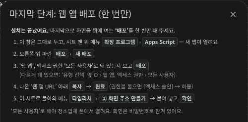
키는 처음 설치한 시트 하나에만 쓸 수 있어요.
5. 웹 앱 배포 (한 번만)
① 시트 맨 위 메뉴 확장 프로그램 › Apps Script — 새 탭이 열려요.
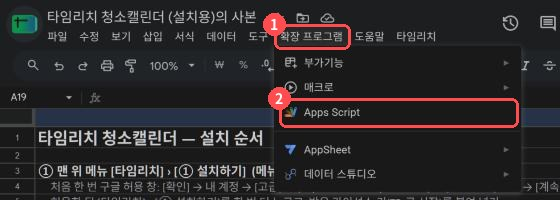
② 오른쪽 위 파란 배포 › 새 배포.
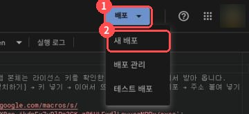
③ 보통 이미 ‘웹 앱’, 액세스 권한 ‘모든 사용자’로 돼 있어요. 확인만 하고 배포.
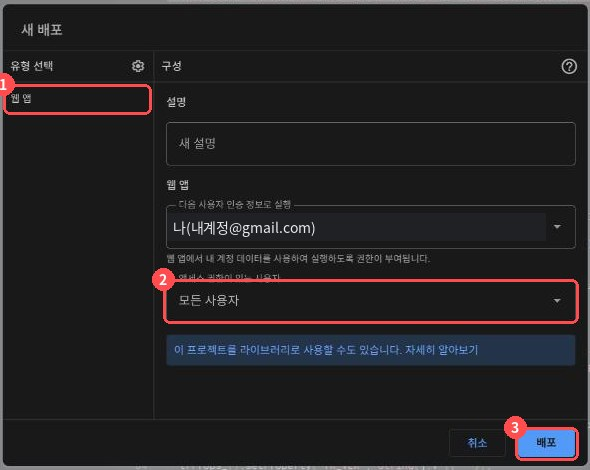
다르게 돼 있으면: ‘유형 선택’ 옆 톱니바퀴 › 웹 앱, ‘액세스 권한이 있는 사용자’ › 모든 사용자. ‘모든 사용자’로 해야 청소업체 폰에서 열려요(화면은 비밀번호로 잠겨 있어요). 권한을 물으면 액세스 승인 → 허용.
④ 나온 ‘웹 앱 URL’ 아래 복사 → 완료. 이 탭은 닫아도 돼요.
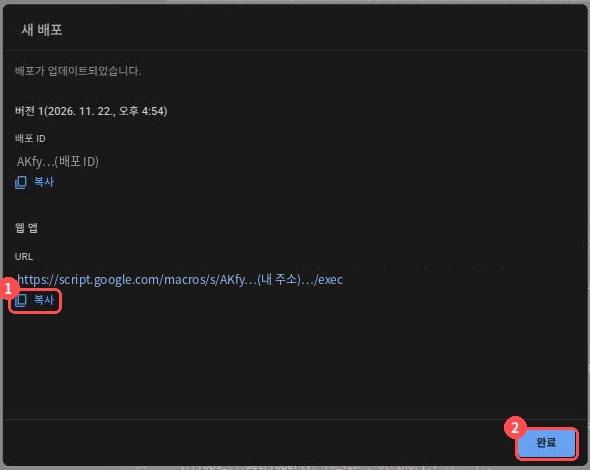
6. 메뉴 [타임리치] › [② 화면 주소 만들기]
시트로 돌아와 타임리치 › ② 화면 주소 만들기 → 복사한 주소를 붙여 넣고 확인.
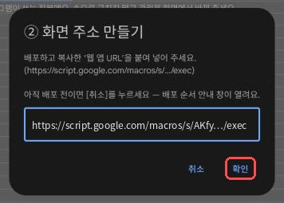
관리용·업체용 화면 주소가 나오면 설치 끝이에요. 관리용은 사장님 폰 홈 화면에 추가해 두면 편해요.
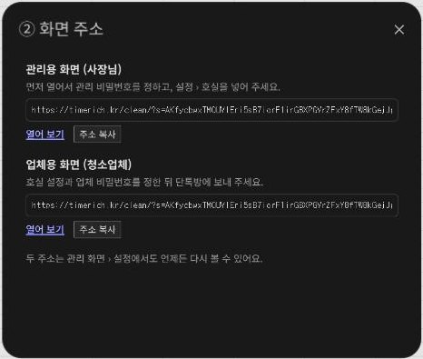
7. 관리용 화면: 비밀번호 → 호실
관리용 주소를 열고 관리 비밀번호를 정하세요. 바로 설정 › 호실이 열려요. 호실 이름·색·문 비밀번호·청소비·수건 규칙·플랫폼 숙소 번호를 넣고 호실 저장.
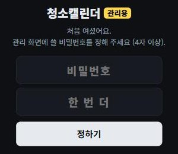
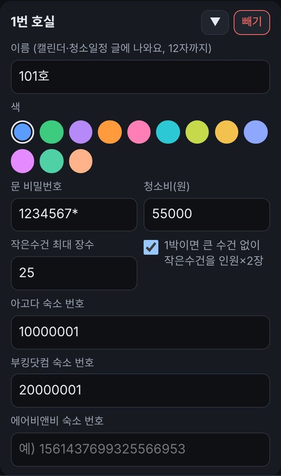
숙소 번호 찾는 곳 — 아고다: YCS 맨 위 ‘숙소 ID’ / 부킹닷컴: 엑스트라넷 맨 위 숙소 이름 옆 숫자 / 에어비앤비: 숙소 주소의 rooms/ 뒤 숫자. 한 번호에 방이 여러 개면 그 방들에 같은 번호를 넣으세요(그 예약은 ‘할 일’에서 방만 고르면 돼요).
저장하면 캘린더에 호실 칸이 생기고, 예약이 들어오면 청소 날짜·박수·인원이 표시돼요.
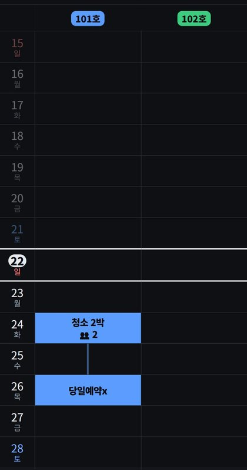
8. 업체 비밀번호 → 단톡방에 업체용 주소
설정에서 업체 비밀번호(숫자 4자리 이상)를 정하고, 업체용 주소를 청소업체 단톡방에 보내 주세요. 업체는 오늘·내일 청소, 캘린더, 추가 일정을 보고 ‘청소 완료’를 눌러요.
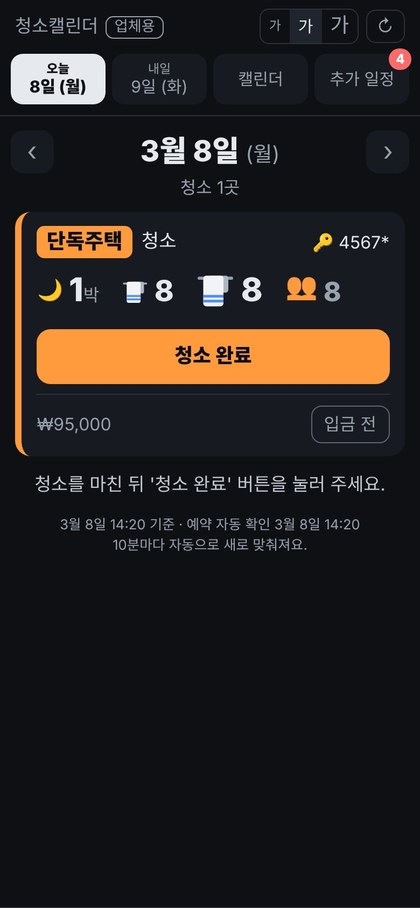
9. 예약 메일 자동 읽기 켜기
설정 › 예약 메일 자동 읽기를 켜면 아고다·부킹닷컴·에어비앤비 예약·취소 메일을 10분마다 읽어 캘린더에 넣어요. 메일 읽기 점검으로 최근 4일 메일이 어떻게 읽히는지 먼저 볼 수 있어요(장부에는 안 써요). ‘못 읽음’이면 이유가 같이 나와요 — 예: 설정에 없는 숙소 번호면 호실에 그 번호를 넣어 주세요.
- 플랫폼 알림 메일 언어는 한국어로 해 주세요
- 예약 메일이 다른 계정으로 오면 지메일 ‘전달’로 이 계정에 넘겨 주세요
- 부킹닷컴 새 예약은 메일에 체크아웃·인원이 없어서 ‘할 일’에 뜨면 채워 주세요
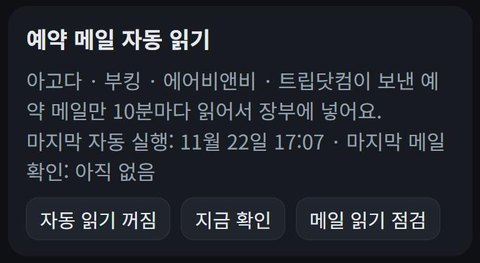
자주 묻는 것
- 업데이트: 새 판이 나오면 3시간 안에 자동으로 바뀌어요. 따로 할 일 없어요
- 화면 주소를 잃어버렸어요: 시트 메뉴 타임리치 › ② 화면 주소 만들기, 또는 관리 화면 › 설정에서 다시 볼 수 있어요
- 설치가 잘 됐는지: 시트 메뉴 타임리치 › 설치 상태 보기
- 관리 비밀번호를 잊었어요: 시트 메뉴 확장 프로그램 › Apps Script → 왼쪽 톱니바퀴 프로젝트 설정 → 맨 아래 ‘스크립트 속성’에서 스크립트 속성 수정 → adminHash 줄 오른쪽 삭제 버튼 → 스크립트 속성 저장. 그다음 관리용 주소를 열면 새 비밀번호를 정하는 화면이 나와요. 예약·호실·설정은 그대로예요. adminHash 말고 다른 줄은 지우지 마세요(다른 줄을 지우면 다시 설치해야 할 수 있어요). 어려우면 크몽 메시지로 말씀해 주세요
- 시트에서 직접 고쳐도 되나요? 예약·전달사항은 관리용 화면에서 바꿔 주세요(시트를 손으로 고치면 형식이 틀려 빠질 수 있어요)
- 호실 수: 구매한 상품만큼(4·8·12곳) 넣을 수 있어요
- 문의: 크몽 메시지로 주세요